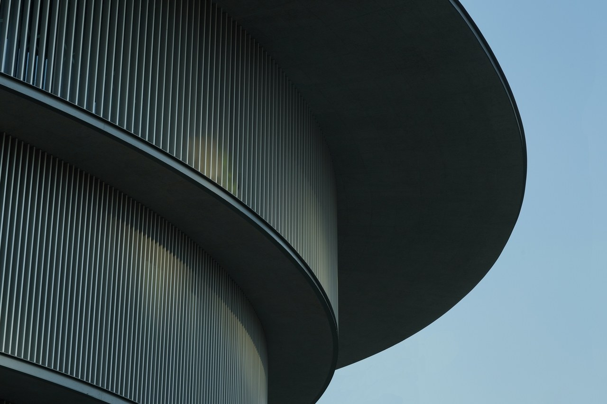

#02
#03
Architect
Tadao Ando
Reveals
Design for
the He Art
Museum in China
Looking up through the light well of the double-helix staircases at the new He Art Museum (HEM) in southern China gives a clear clue to its architect Tadao Ando’s inspiration. The monumental stairs, designed to allow visitors to travel from the ground floor to the fourth in opposite directions simultaneously, is capped by an oculus: a physical representation of ancient Chinese cosmology that declares the sky is round and the earth is square. At the HEM, however, the earth is not square but round—a cylindrical volume with a vertically slatted facade. And when it opens its doors in Shunde on March 21, it will be filled with both regional and international treasures.
Looking up in the stairwell of the He Art Museum in China. Photo: Courtesy of HEM
Founded by local billionaire entrepreneur He Jianfeng (who made his fortune in appliances), the privately held museum will be a home for his family’s collection of over 400 works by Chinese and international artists. He’s inventory of indigenous art—particularly paintings by the coastal Guangdong, Guangxi, and Hainan provinces–based Lingnan School, which fused traditional Chinese watercolor techniques with Impressionism in the 19th century—has inspired the museum’s mission to display, illuminate, and celebrate southern Chinese culture. The HEM will be the first museum to do so.
Its architecture, then, says Ando, should also reflect that.
“I want to
create a
museum that
can synthesize
southern
China’s rich
diverse
cultures
that stretches
many millennia
and the
influences
that birthed
Lingnan
architecture,”
the architect explains in a statement. “I imagined HEM as an energetic central anchor point to all the artistic and regional custom, climate, landscape, and civilization in Lingnan.” In addition to cosmology, he found design influences in the architecture of the nearby Jiangnan delta region (home to Shanghai), which has a similar terrain to southern China, as well as the founder’s surname, He, which is also a Chinese word meaning “balance,” “fortune,” “harmony,” and “union.”
A detail of the HEM facade, by Tadao Ando. Photo: Courtesy of HEM
On the interior, galleries within the museum’s circular volume (of which a shape comparison could also be made to the circular walled villages of the region’s native Hakka people) are flooded with light from the oculus, and the paired staircases provide visual harmony. At the ground-floor level, a square gallery provides additional exhibit space and houses a bookstore and café. And a 3,230-square-foot (300-square-meter) education area will be open for formal and informal conversation and independent study.
Though the architecture may be a cosmopolitan combination of Chinese design styles, the grounds are drawn directly from traditional Lingnan landscape. Because the region includes two coastal provinces and an island, water plays an important role in the garden design. Evoking the Lingnan heritage of waterside pavilions, the HEM is wrapped by a pond and accessed via a peripatetic pathway.
Although the region’s food is well-known in the West (Cantonese cuisine is much of the basis for American Chinese food, in particular), its art, design, and decorative arts canon will be a discovery exercise for many non-Chinese visitors. The museum’s first exhibition will celebrate the diverse Western and non-Western artworks in the permanent collection, and future temporary shows will focus on displays of indigenous Lingnan art. Says Ando, “I hope HEM can become the heart of Lingnan culture, not just in Shunde but the whole Greater China.”